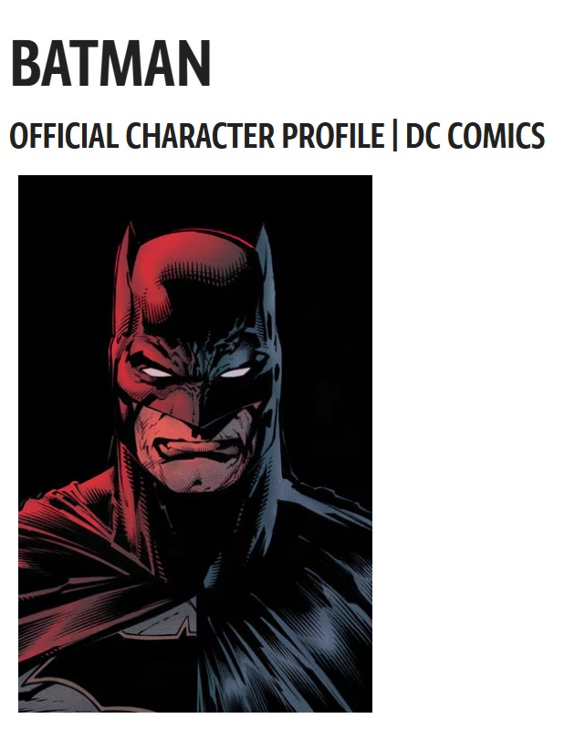
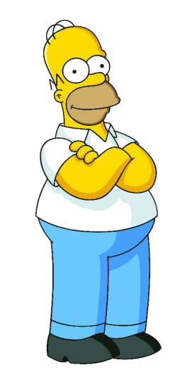

Notes
Also known as Batman Brain Dream.
Collaborative work by Ron English and Travie McCoy.
This work appears on Artsy’s artwork page as Batman Brain Dream, where it is listed as a 2021 oil acrylic and collage on canvas measuring 36 × 36 inches (91.4 × 91.4 cm), unique, hand-signed by the artist, with certificate of authenticity included, available here, accessed April 17, 2026.
The composition draws on DC Comics’ Batman; a representative image is available here.
It also incorporates imagery associated with the children’s television series Teletubbies; a representative image is available here.
Additional references include Homer from The Simpsons, available here; Mickey Mouse, created by Walt Disney and Ub Iwerks, available here; Charlie Brown from Peanuts, created by Charles M. Schulz, available here; Barney from Barney & Friends, available here; and Ronald McDonald, available here.
Ancillary Documentation



